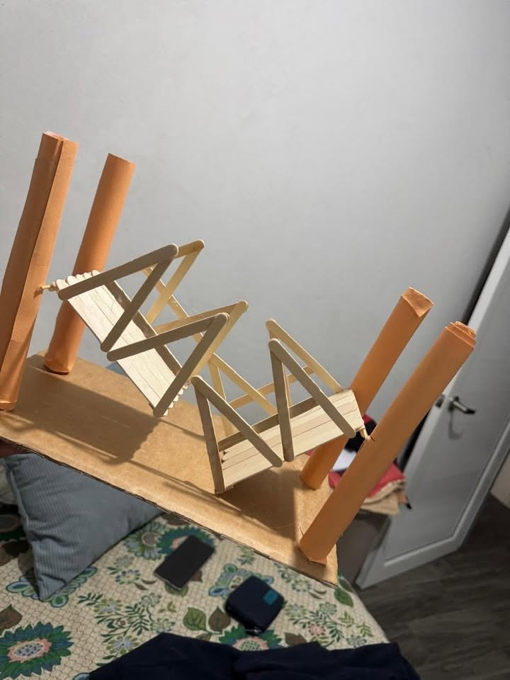
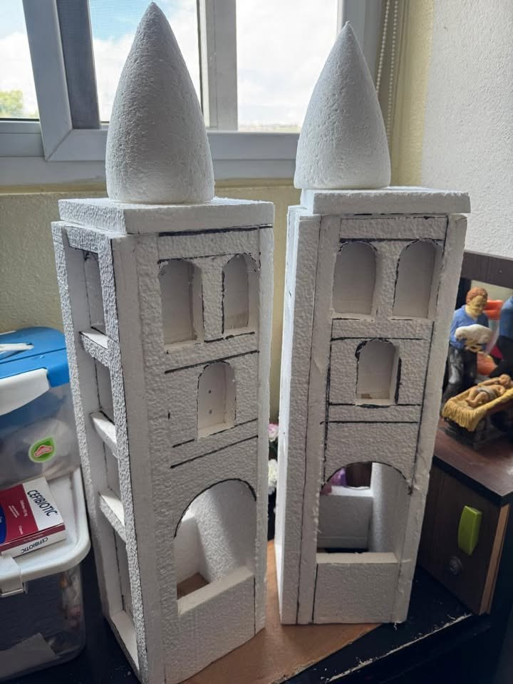
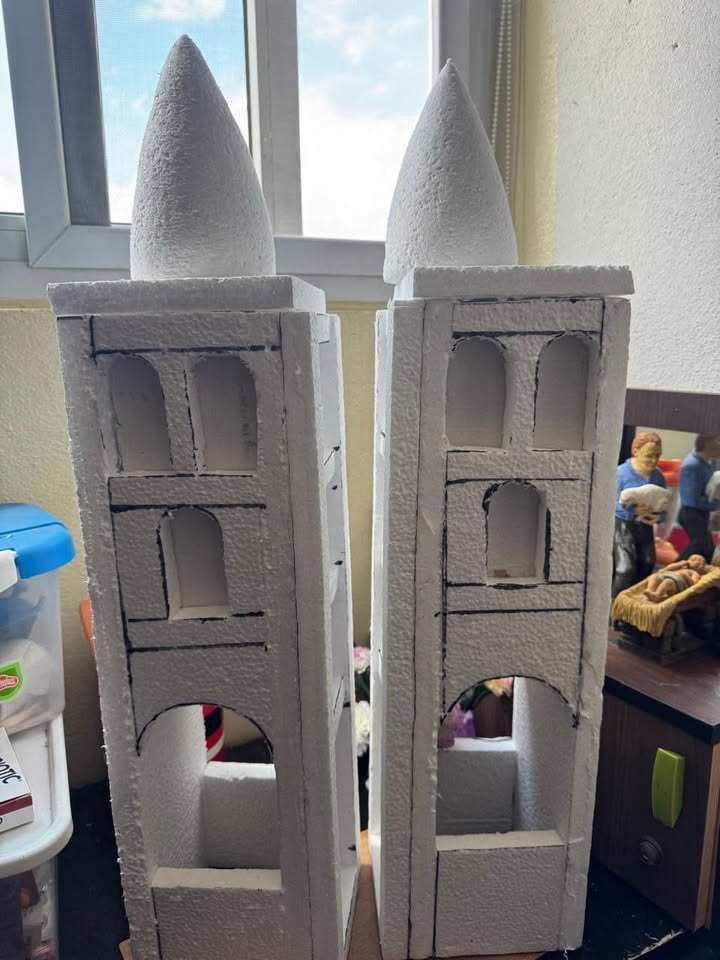

Un puente que se levanta con la fuerza de los fluidos.
Diseñamos, construimos y explicamos un puente basculante con sistema hidráulico y mecánico, con materiales accesibles.
Ver el proyectoDe qué trata
Física
Usamos el Principio de Pascal para mover una gran carga con poca fuerza.
Ingeniería
Combinamos estructura, mecánica y automatización en un prototipo a escala.
Movilidad
Un puente basculante deja pasar tanto vehículos como embarcaciones.
Nuestro prototipo


